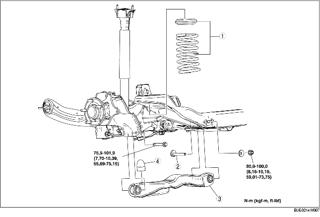

1. Déposer les différents éléments selon l'ordre indiqué dans le tableau.
2. Pour la repose, suivre l'ordre inverse de la dépose.
3. Inspecter la géométrie des roues, et opérer les réglages nécessaires.
(voir la section GEOMETRIE DE ROUE ARRIERE.)

.
|
1
|
Composant de ressort hélicoïdal arrière
(voir la section DEPOSE/REPOSE DE RESSORT HELICOIDAL ARRIERE.)
|
|
2
|
Boulon intérieur de bras inférieur arrière
|
|
3
|
Bras inférieur arrière
|
|
4
|
Butée liée
|